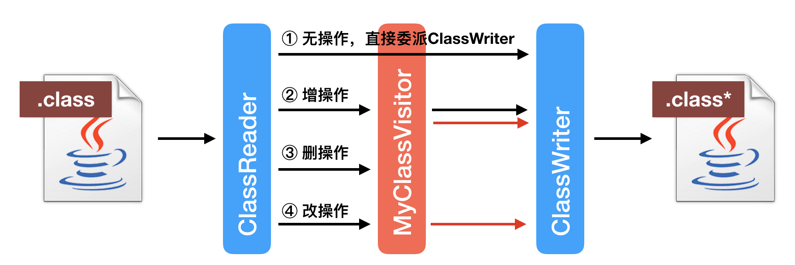

【工具篇】 常用工具介绍
在前面的文章中，我曾使用了不少工具来辅助讲解，也收到了不少同学留言，说不了解这些工具，不知道都有什么用，应该怎么用。那么今天我便统一做一次具体的介绍。本篇代码较多，你可以点击文稿查看。
javap：查阅 Java 字节码
javap 是一个能够将 class 文件反汇编成人类可读格式的工具。在本专栏中，我们经常借助这个工具来查阅 Java 字节码。
举个例子，在讲解异常处理那一篇中，我曾经展示过这么一段代码。
public class Foo {
private int tryBlock;
private int catchBlock;
private int finallyBlock;
private int methodExit;
public void test() {
try {
tryBlock = 0;
} catch (Exception e) {
catchBlock = 1;
} finally {
finallyBlock = 2;
}
methodExit = 3;
}
}
编译过后，我们便可以使用 javap 来查阅 Foo.test 方法的字节码。
$ javac Foo.java
$ javap -p -v Foo
Classfile ../Foo.class
Last modified ..; size 541 bytes
MD5 checksum 3828cdfbba56fea1da6c8d94fd13b20d
Compiled from "Foo.java"
public class Foo
minor version: 0
major version: 54
flags: (0x0021) ACC_PUBLIC, ACC_SUPER
this_class: #7 // Foo
super_class: #8 // java/lang/Object
interfaces: 0, fields: 4, methods: 2, attributes: 1
Constant pool:
#1 = Methodref #8.#23 // java/lang/Object."<init>":()V
#2 = Fieldref #7.#24 // Foo.tryBlock:I
#3 = Fieldref #7.#25 // Foo.finallyBlock:I
#4 = Class #26 // java/lang/Exception
#5 = Fieldref #7.#27 // Foo.catchBlock:I
#6 = Fieldref #7.#28 // Foo.methodExit:I
#7 = Class #29 // Foo
#8 = Class #30 // java/lang/Object
#9 = Utf8 tryBlock
#10 = Utf8 I
#11 = Utf8 catchBlock
#12 = Utf8 finallyBlock
#13 = Utf8 methodExit
#14 = Utf8 <init>
#15 = Utf8 ()V
#16 = Utf8 Code
#17 = Utf8 LineNumberTable
#18 = Utf8 test
#19 = Utf8 StackMapTable
#20 = Class #31 // java/lang/Throwable
#21 = Utf8 SourceFile
#22 = Utf8 Foo.java
#23 = NameAndType #14:#15 // "<init>":()V
#24 = NameAndType #9:#10 // tryBlock:I
#25 = NameAndType #12:#10 // finallyBlock:I
#26 = Utf8 java/lang/Exception
#27 = NameAndType #11:#10 // catchBlock:I
#28 = NameAndType #13:#10 // methodExit:I
#29 = Utf8 Foo
#30 = Utf8 java/lang/Object
#31 = Utf8 java/lang/Throwable
{
private int tryBlock;
descriptor: I
flags: (0x0002) ACC_PRIVATE
private int catchBlock;
descriptor: I
flags: (0x0002) ACC_PRIVATE
private int finallyBlock;
descriptor: I
flags: (0x0002) ACC_PRIVATE
private int methodExit;
descriptor: I
flags: (0x0002) ACC_PRIVATE
public Foo();
descriptor: ()V
flags: (0x0001) ACC_PUBLIC
Code:
stack=1, locals=1, args_size=1
0: aload_0
1: invokespecial #1 // Method java/lang/Object."<init>":()V
4: return
LineNumberTable:
line 1: 0
public void test();
descriptor: ()V
flags: (0x0001) ACC_PUBLIC
Code:
stack=2, locals=3, args_size=1
0: aload_0
1: iconst_0
2: putfield #2 // Field tryBlock:I
5: aload_0
6: iconst_2
7: putfield #3 // Field finallyBlock:I
10: goto 35
13: astore_1
14: aload_0
15: iconst_1
16: putfield #5 // Field catchBlock:I
19: aload_0
20: iconst_2
21: putfield #3 // Field finallyBlock:I
24: goto 35
27: astore_2
28: aload_0
29: iconst_2
30: putfield #3 // Field finallyBlock:I
33: aload_2
34: athrow
35: aload_0
36: iconst_3
37: putfield #6 // Field methodExit:I
40: return
Exception table:
from to target type
0 5 13 Class java/lang/Exception
0 5 27 any
13 19 27 any
LineNumberTable:
line 9: 0
line 13: 5
line 14: 10
line 10: 13
line 11: 14
line 13: 19
line 14: 24
line 13: 27
line 14: 33
line 15: 35
line 16: 40
StackMapTable: number_of_entries = 3
frame_type = 77 /* same_locals_1_stack_item */
stack = [ class java/lang/Exception ]
frame_type = 77 /* same_locals_1_stack_item */
stack = [ class java/lang/Throwable ]
frame_type = 7 /* same */
}
SourceFile: "Foo.java"
这里面我用到了两个选项。第一个选项是 -p。默认情况下 javap 会打印所有非私有的字段和方法，当加了 -p 选项后，它还将打印私有的字段和方法。第二个选项是 -v。它尽可能地打印所有信息。如果你只需要查阅方法对应的字节码，那么可以用 -c 选项来替换 -v。
javap 的 -v 选项的输出分为几大块。
\1. 基本信息，涵盖了原 class 文件的相关信息。
class 文件的版本号（minor version: 0，major version: 54），该类的访问权限（flags: (0x0021) ACC_PUBLIC, ACC_SUPER），该类（this_class: #7）以及父类（super_class: #8）的名字，所实现接口（interfaces: 0）、字段（fields: 4）、方法（methods: 2）以及属性（attributes: 1）的数目。
这里属性指的是 class 文件所携带的辅助信息，比如该 class 文件的源文件的名称。这类信息通常被用于 Java 虚拟机的验证和运行，以及 Java 程序的调试，一般无须深入了解。
Classfile ../Foo.class
Last modified ..; size 541 bytes
MD5 checksum 3828cdfbba56fea1da6c8d94fd13b20d
Compiled from "Foo.java"
public class Foo
minor version: 0
major version: 54
flags: (0x0021) ACC_PUBLIC, ACC_SUPER
this_class: #7 // Foo
super_class: #8 // java/lang/Object
interfaces: 0, fields: 4, methods: 2, attributes: 1
class 文件的版本号指的是编译生成该 class 文件时所用的 JRE 版本。由较新的 JRE 版本中的 javac 编译而成的 class 文件，不能在旧版本的 JRE 上跑，否则，会出现如下异常信息。（Java 8 对应的版本号为 52，Java 10 对应的版本号为 54。）
Exception in thread "main" java.lang.UnsupportedClassVersionError: Foo has been compiled by a more recent version of the Java Runtime (class file version 54.0), this version of the Java Runtime only recognizes class file versions up to 52.0
类的访问权限通常为 ACC_ 开头的常量。具体每个常量的意义可以查阅 Java 虚拟机规范 4.1 小节 [1]。
\2. 常量池，用来存放各种常量以及符号引用。
常量池中的每一项都有一个对应的索引（如 #1），并且可能引用其他的常量池项（#1 = Methodref #8.#23）。
Constant pool:
#1 = Methodref #8.#23 // java/lang/Object."<init>":()V
...
#8 = Class #30 // java/lang/Object
...
#14 = Utf8 <init>
#15 = Utf8 ()V
...
#23 = NameAndType #14:#15 // "<init>":()V
...
#30 = Utf8 java/lang/Object
举例来说，上图中的 1 号常量池项是一个指向 Object 类构造器的符号引用。它是由另外两个常量池项所构成。如果将它看成一个树结构的话，那么它的叶节点会是字符串常量，如下图所示。

\3. 字段区域，用来列举该类中的各个字段。
这里最主要的信息便是该字段的类型（descriptor: I）以及访问权限（flags: (0x0002) ACC_PRIVATE）。对于声明为 final 的静态字段而言，如果它是基本类型或者字符串类型，那么字段区域还将包括它的常量值。
private int tryBlock;
descriptor: I
flags: (0x0002) ACC_PRIVATE
另外，Java 虚拟机同样使用了“描述符”（descriptor）来描述字段的类型。具体的对照如下表所示。其中比较特殊的，我已经高亮显示。
\4. 方法区域，用来列举该类中的各个方法。
除了方法描述符以及访问权限之外，每个方法还包括最为重要的代码区域（Code:)。
public void test();
descriptor: ()V
flags: (0x0001) ACC_PUBLIC
Code:
stack=2, locals=3, args_size=1
0: aload_0
...
10: goto 35
...
34: athrow
35: aload_0
...
40: return
Exception table:
from to target type
0 5 13 Class java/lang/Exception
0 5 27 any
13 19 27 any
LineNumberTable:
line 9: 0
...
line 16: 40
StackMapTable: number_of_entries = 3
frame_type = 77 /* same_locals_1_stack_item */
stack = [ class java/lang/Exception ]
...
代码区域一开始会声明该方法中的操作数栈（stack=2）和局部变量数目（locals=3）的最大值，以及该方法接收参数的个数（args_size=1）。注意这里局部变量指的是字节码中的局部变量，而非 Java 程序中的局部变量。
接下来则是该方法的字节码。每条字节码均标注了对应的偏移量（bytecode index，BCI），这是用来定位字节码的。比如说偏移量为 10 的跳转字节码 10: goto 35，将跳转至偏移量为 35 的字节码 35: aload_0。
紧跟着的异常表（Exception table:）也会使用偏移量来定位每个异常处理器所监控的范围（由 from 到 to 的代码区域），以及异常处理器的起始位置（target）。除此之外，它还会声明所捕获的异常类型（type）。其中，any 指代任意异常类型。
再接下来的行数表（LineNumberTable:）则是 Java 源程序到字节码偏移量的映射。如果你在编译时使用了 -g 参数（javac -g Foo.java），那么这里还将出现局部变量表（LocalVariableTable:），展示 Java 程序中每个局部变量的名字、类型以及作用域。
行数表和局部变量表均属于调试信息。Java 虚拟机并不要求 class 文件必备这些信息。
LocalVariableTable:
Start Length Slot Name Signature
14 5 1 e Ljava/lang/Exception;
0 41 0 this LFoo;
最后则是字节码操作数栈的映射表（StackMapTable: number_of_entries = 3）。该表描述的是字节码跳转后操作数栈的分布情况，一般被 Java 虚拟机用于验证所加载的类，以及即时编译相关的一些操作，正常情况下，你无须深入了解。
2.OpenJDK 项目 Code Tools：实用小工具集
OpenJDK 的 Code Tools 项目 [2] 包含了好几个实用的小工具。
在第一篇的实践环节中，我们使用了其中的字节码汇编器反汇编器 ASMTools[3]，当前 6.0 版本的下载地址位于 [4]。ASMTools 的反汇编以及汇编操作所对应的命令分别为：
$ java -cp /path/to/asmtools.jar org.openjdk.asmtools.jdis.Main Foo.class > Foo.jasm
和
$ java -cp /path/to/asmtools.jar org.openjdk.asmtools.jasm.Main Foo.jasm
该反汇编器的输出格式和 javap 的不尽相同。一般我只使用它来进行一些简单的字节码修改，以此生成无法直接由 Java 编译器生成的类，它在 HotSpot 虚拟机自身的测试中比较常见。
在第一篇的实践环节中，我们需要将整数 2 赋值到一个声明为 boolean 类型的局部变量中。我采取的做法是将编译生成的 class 文件反汇编至一个文本文件中，然后找到 boolean flag = true 对应的字节码序列，也就是下面的两个。
iconst_1;
istore_1;
将这里的 iconst_1 改为 iconst_2[5]，保存后再汇编至 class 文件即可完成第一篇实践环节的需求。
除此之外，你还可以利用这一套工具来验证我之前文章中的一些结论。比如我说过 class 文件允许出现参数类型相同、而返回类型不同的方法，并且，在作为库文件时 Java 编译器将使用先定义的那一个，来决定具体的返回类型。
具体的验证方法便是在反汇编之后，利用文本编辑工具复制某一方法，并且更改该方法的描述符，保存后再汇编至 class 文件。
Code Tools 项目还包含另一个实用的小工具 JOL[6]，当前 0.9 版本的下载地址位于 [7]。JOL 可用于查阅 Java 虚拟机中对象的内存分布，具体可通过如下两条指令来实现。
$ java -jar /path/to/jol-cli-0.9-full.jar internals java.util.HashMap
$ java -jar /path/to/jol-cli-0.9-full.jar estimates java.util.HashMap
3.ASM：Java 字节码框架
ASM[8] 是一个字节码分析及修改框架。它被广泛应用于许多项目之中，例如 Groovy、Kotlin 的编译器，代码覆盖测试工具 Cobertura、JaCoCo，以及各式各样通过字节码注入实现的程序行为监控工具。甚至是 Java 8 中 Lambda 表达式的适配器类，也是借助 ASM 来动态生成的。
ASM 既可以生成新的 class 文件，也可以修改已有的 class 文件。前者相对比较简单一些。ASM 甚至还提供了一个辅助类 ASMifier，它将接收一个 class 文件并且输出一段生成该 class 文件原始字节数组的代码。如果你想快速上手 ASM 的话，那么你可以借助 ASMifier 生成的代码来探索各个 API 的用法。
下面我将借助 ASMifier，来生成第一篇实践环节所用到的类。（你可以通过该地址 [9] 下载 6.0-beta 版。）
$ echo '
public class Foo {
public static void main(String[] args) {
boolean flag = true;
if (flag) System.out.println("Hello, Java!");
if (flag == true) System.out.println("Hello, JVM!");
}
}' > Foo.java
# 这里的 javac 我使用的是 Java 8 版本的。ASM 6.0 可能暂不支持新版本的 javac 编译出来的 class 文件
$ javac Foo.java
$ java -cp /PATH/TO/asm-all-6.0_BETA.jar org.objectweb.asm.util.ASMifier Foo.class | tee FooDump.java
...
public class FooDump implements Opcodes {
public static byte[] dump () throws Exception {
ClassWriter cw = new ClassWriter(0);
FieldVisitor fv;
MethodVisitor mv;
AnnotationVisitor av0;
cw.visit(V1_8, ACC_PUBLIC + ACC_SUPER, "Foo", null, "java/lang/Object", null);
...
{
mv = cw.visitMethod(ACC_PUBLIC + ACC_STATIC, "main", "([Ljava/lang/String;)V", null, null);
mv.visitCode();
mv.visitInsn(ICONST_1);
mv.visitVarInsn(ISTORE, 1);
mv.visitVarInsn(ILOAD, 1);
...
mv.visitInsn(RETURN);
mv.visitMaxs(2, 2);
mv.visitEnd();
}
...
可以看到，ASMifier 生成的代码中包含一个名为 FooDump 的类，其中定义了一个名为 dump 的方法。该方法将返回一个 byte 数组，其值为生成类的原始字节。
在 dump 方法中，我们新建了功能类 ClassWriter 的一个实例，并通过它来访问不同的成员，例如方法、字段等等。
每当访问一种成员，我们便会得到另一个访问者。在上面这段代码中，当我们访问方法时（即 visitMethod），便会得到一个 MethodVisitor。在接下来的代码中，我们会用这个 MethodVisitor 来访问（这里等同于生成）具体的指令。
这便是 ASM 所使用的访问者模式。当然，这段代码仅包含 ClassWriter 这一个访问者，因此看不出具体有什么好处。
我们暂且不管这个访问者模式，先来看看如何实现第一篇课后实践的要求。首先，main 方法中的 boolean flag = true; 语句对应的代码是：
mv.visitInsn(ICONST_1);
mv.visitVarInsn(ISTORE, 1);
也就是说，我们只需将这里的 ICONST_1 更改为 ICONST_2，便可以满足要求。下面我用另一个类 Wrapper，来调用修改过后的 FooDump.dump 方法。
$ echo 'import java.nio.file.*;
public class Wrapper {
public static void main(String[] args) throws Exception {
Files.write(Paths.get("Foo.class"), FooDump.dump());
}
}' > Wrapper.java
$ javac -cp /PATH/TO/asm-all-6.0_BETA.jar FooDump.java Wrapper.java
$ java -cp /PATH/TO/asm-all-6.0_BETA.jar:. Wrapper
$ java Foo
这里的输出结果应和通过 ASMTools 修改的结果一致。
通过 ASM 来修改已有 class 文件则相对复杂一些。不过我们可以从下面这段简单的代码来开始学起：
public static void main(String[] args) throws Exception {
ClassReader cr = new ClassReader("Foo");
ClassWriter cw = new ClassWriter(ClassWriter.COMPUTE_FRAMES);
cr.accept(cw, ClassReader.SKIP_FRAMES);
Files.write(Paths.get("Foo.class"), cw.toByteArray());
}
这段代码的功能便是读取一个 class 文件，将之转换为 ASM 的数据结构，然后再转换为原始字节数组。其中，我使用了两个功能类。除了已经介绍过的 ClassWriter 外，还有一个 ClassReader。
ClassReader 将读取“Foo”类的原始字节，并且翻译成对应的访问请求。也就是说，在上面 ASMifier 生成的代码中的各个访问操作，现在都交给 ClassReader.accept 这一方法来发出了。
那么，如何修改这个 class 文件的字节码呢？原理很简单，就是将 ClassReader 的访问请求发给另外一个访问者，再由这个访问者委派给 ClassWriter。
这样一来，新增操作可以通过在某一需要转发的请求后面附带新的请求来实现；删除操作可以通过不转发请求来实现；修改操作可以通过忽略原请求，新建并发出另外的请求来实现。

import java.nio.file.*;
import org.objectweb.asm.*;
public class ASMHelper implements Opcodes {
static class MyMethodVisitor extends MethodVisitor {
private MethodVisitor mv;
public MyMethodVisitor(int api, MethodVisitor mv) {
super(api, null);
this.mv = mv;
}
@Override
public void visitCode() {
mv.visitCode();
mv.visitFieldInsn(GETSTATIC, "java/lang/System", "out", "Ljava/io/PrintStream;");
mv.visitLdcInsn("Hello, World!");
mv.visitMethodInsn(INVOKEVIRTUAL, "java/io/PrintStream", "println", "(Ljava/lang/String;)V", false);
mv.visitInsn(RETURN);
mv.visitMaxs(2, 1);
mv.visitEnd();
}
}
static class MyClassVisitor extends ClassVisitor {
public MyClassVisitor(int api, ClassVisitor cv) {
super(api, cv);
}
@Override
public MethodVisitor visitMethod(int access, String name, String descriptor, String signature,
String[] exceptions) {
MethodVisitor visitor = super.visitMethod(access, name, descriptor, signature, exceptions);
if ("main".equals(name)) {
return new MyMethodVisitor(ASM6, visitor);
}
return visitor;
}
}
public static void main(String[] args) throws Exception {
ClassReader cr = new ClassReader("Foo");
ClassWriter cw = new ClassWriter(ClassWriter.COMPUTE_FRAMES);
ClassVisitor cv = new MyClassVisitor(ASM6, cw);
cr.accept(cv, ClassReader.SKIP_FRAMES);
Files.write(Paths.get("Foo.class"), cw.toByteArray());
}
}
这里我贴了一段代码，在 ClassReader 和 ClassWriter 中间插入了一个自定义的访问者 MyClassVisitor。它将截获由 ClassReader 发出的对名字为“main”的方法的访问请求，并且替换为另一个自定义的 MethodVisitor。
这个 MethodVisitor 会忽略由 ClassReader 发出的任何请求，仅在遇到 visitCode 请求时，生成一句“System.out.println(“Hello World!”);”。
由于篇幅的限制，我就不继续深入介绍下去了。如果你对 ASM 有浓厚的兴趣，可以参考这篇教程 [10]。
你对这些常用工具还有哪些问题呢？可以给我留言，我们一起讨论。感谢你的收听，我们下期再见。
[1] https://docs.oracle.com/javase/specs/jvms/se10/html/jvms-4.html#jvms-4.1 [2] http://openjdk.java.net/projects/code-tools/ [3] https://wiki.openjdk.java.net/display/CodeTools/asmtools [4] https://adopt-openjdk.ci.cloudbees.com/view/OpenJDK/job/asmtools/lastSuccessfulBuild/artifact/asmtools-6.0.tar.gz [5] https://cs.au.dk/~mis/dOvs/jvmspec/ref--21.html [6] http://openjdk.java.net/projects/code-tools/jol/ [7] http://central.maven.org/maven2/org/openjdk/jol/jol-cli/0.9/jol-cli-0.9-full.jar [8] https://asm.ow2.io/ [9] https://repository.ow2.org/nexus/content/repositories/releases/org/ow2/asm/asm-all/6.0_BETA/asm-all-6.0_BETA.jar [10] http://web.cs.ucla.edu/~msb/cs239-tutorial/